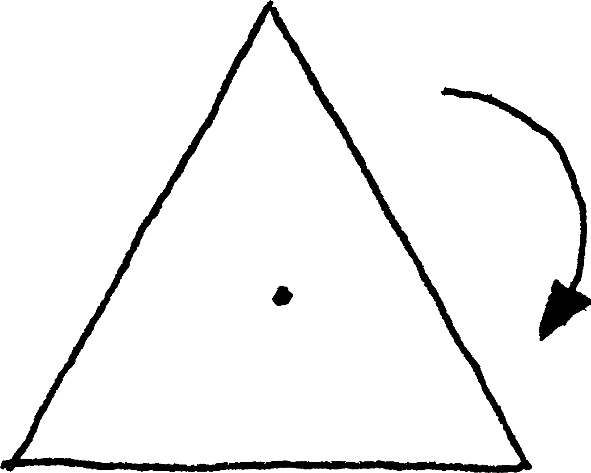
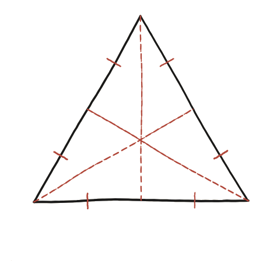

On és el centre d'un triangle equilàter?

Què hem de demostrar
L'enunciat només demana trobar el punt marcat: el centre del triangle equilàter. Però "trobar-lo" de manera honesta vol dir explicar per què existeix un únic punt que mereix aquest nom — per què, si tracem les tres medianes (el segment de cada vèrtex al punt mitjà del costat oposat), les tres passen exactament pel mateix lloc, en comptes de formar un petit triangle al mig, que és el que passaria en un triangle qualsevol una mica menys simètric.
Una mediana és també un eix de simetria
Comencem per una sola mediana, la que surt del vèrtex superior A cap al punt mitjà M del costat oposat BC. Els triangles ABM i ACM tenen: el costat AB igual a AC (el triangle és equilàter), el costat BM igual a MC (perquè M és el punt mitjà) i el costat AM compartit pels dos. Els tres costats coincideixen d'un triangle a l'altre — pel criteri costat-costat-costat, ABM i ACM són triangles idèntics (congruents).
D'aquí surt una conseqüència que farem servir tot seguit: com que els dos triangles són idèntics, els angles que formen a M també ho són — i com que junts sumen un angle pla (180°), cadascun ha de fer exactament 90°. La mediana des d'A no només arriba al punt mitjà del costat oposat: hi arriba perpendicularment. És, alhora, l'altura des d'A i l'eix de simetria que intercanvia B amb C deixant tot el triangle igual.

Per què les tres es troben en un sol punt
El mateix argument val, sense canviar ni una lletra, per a les medianes des de B i des de C: cadascuna és, també, eix de simetria del triangle. Però amb això encara no n'hi ha prou. Que cadascuna de les tres rectes sigui un eix de simetria no diu res sobre si es tallen totes en un mateix lloc: tres rectes qualssevol es tallen, normalment, en tres punts diferents i deixen un petit triangle al mig. Cal un argument per a la concurrència.
L'argument és curt. Prenem la mediana des d'A i fem-ne un mirall: reflectir el triangle en aquesta recta l'envia exactament sobre ell mateix i intercanvia B amb C. Per tant intercanvia també la mediana des de B amb la mediana des de C. Ara bé, si aquestes dues rectes s'intercanvien, el seu punt de tall —anomenem-lo P— no es pot moure: la reflexió l'ha de deixar on és. I els únics punts que una reflexió deixa quiets són els de l'eix mateix. Conclusió: P és damunt de la mediana des d'A. És a dir, la tercera mediana passa pel punt on es tallen les altres dues.
Aquest és el punt que l'enunciat demana marcar: el baricentre (o centre) del triangle equilàter, intersecció simultània de les tres medianes, de les tres altures i de les tres bisectrius, perquè en aquest triangle particular totes tres famílies de línies coincideixen. Un avís de vocabulari: aquest punt no és un «centre de simetria» en el sentit habitual —el triangle equilàter no té simetria central: no coincideix amb ell mateix en girar-lo 180°. És el centre dels seus tres eixos de simetria i del gir de 120°, que és una altra cosa.
Les tres medianes d'un triangle equilàter es tallen en un únic punt —el centre— perquè cadascuna és alhora eix de simetria del triangle: reflectint per una d'elles, les altres dues s'intercanvien, i el seu punt de tall, que no es pot moure, ha de caure damunt de l'eix. En aquest triangle, i només en aquest, medianes, altures i bisectrius són les mateixes tres línies.